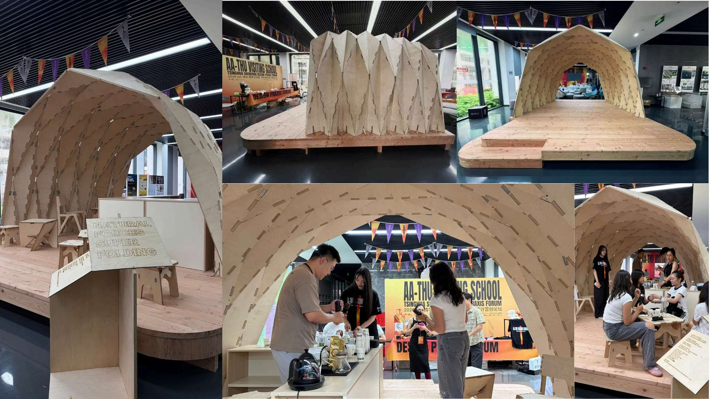
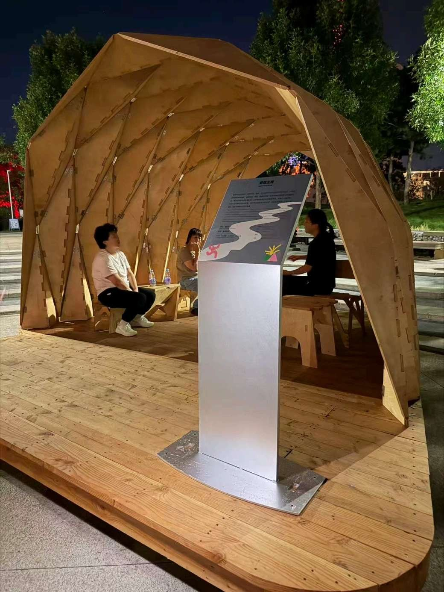
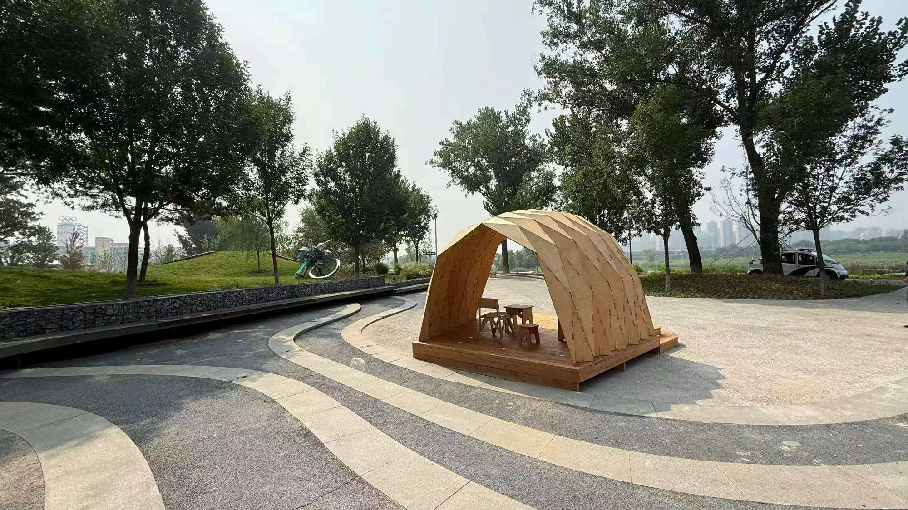

01 · 2026 · Tsinghua SIGS, Shenzhen · Birch marine plywood · 4.2 × 4.8 × 2.5 m
Folded Timber Plates Pavilion
ศาลาแผ่นไม้อัดพับ · Unit F, “Natural Forces • Super Folding”
- Role
- Designer, Design Tutor & invited speaker
- Designed by
- Walaiporn Nakapan with Dr. Nitipong Praphaphankul
- Unit
- Unit F, “Natural Forces • Super Folding” — the Chulalongkorn University team
- Venue
- AA-THU Visiting School Shenzhen 2026, “Digital Engine, Super Making” — AA School (London) with iFHHs · Tsinghua SIGS
- Dates
- Online 27 Jun – 5 Jul 2026 · Onsite 10 – 20 Jul 2026
- Timber
- Zy Timber, Shanghai Zhenyuan Timber Structures Engineering Co., Ltd.

A single-material pavilion in birch marine plywood, developed from Origami principles: flat sheets cut and folded until the folds themselves carry the load — no heavy post-and-beam frame behind them. Folding turns a thin sheet into a structural shell, cutting material volume and making the whole thing flat-packable.
Fabrication, assembly, disassembly, transport and reassembly were part of the brief from the first sketch, not an afterthought. Students from several countries carried the work from computational form-finding, through machine-cut components, to hand assembly on site in eleven days.
4.2 × 4.8 × 2.5 m
overall dimensions
1
single material: birch marine plywood
11
days of on-site assembly
0
post-and-beam frames — the folds do the work
01b · 2026 · Shougang Park, Beijing · Design for reversibility · On permanent display
From Shenzhen to Beijing — the pavilion’s second site
จากเสิ่นเจิ้นสู่ปักกิ่ง
When the school ended, the pavilion was dismantled, moved across the country and reassembled at Shougang Park in Beijing, where it remains with no scheduled date for dismantling.
That journey is the argument: a folded plate system detailed for fabrication, assembly, disassembly, transport and reassembly does not end when its programme does. Design for reversibility extends the life of a temporary installation and lets it acquire a new presence in another place — a public park rather than a university lobby.

